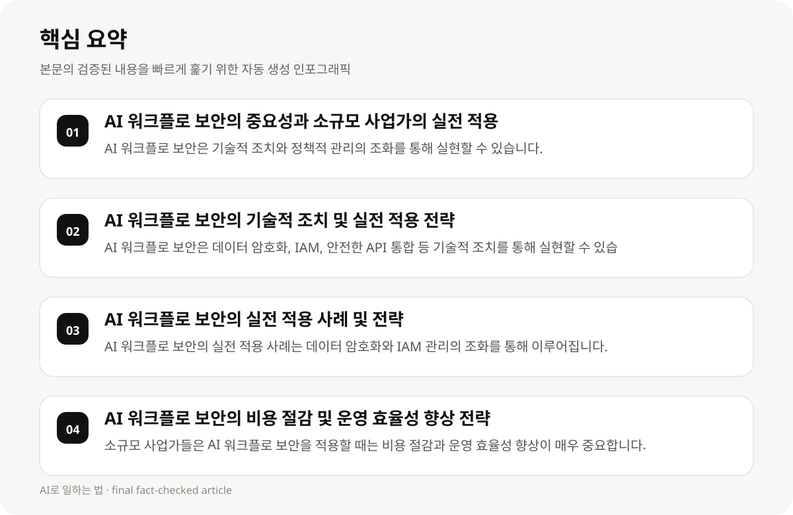

AI 워크플로 보안의 중요성과 소규모 사업가의 실전 적용 #
소규모 사업가들이 AI 워크플로를 사용할 때 가장 큰 위험은 '다양한 암호화 및 접근 제어' 부족으로 인한 보안 취약점입니다. 이는 데이터 유출, 인증 오류, API 허가 문제 등 다양한 위험을 초래할 수 있습니다.
AI 워크플로 보안은 기술적 조치와 정책적 관리의 조화를 통해 실현할 수 있으며, 이는 기업의 비용 절감과 운영 효율성 향상에 기여합니다. 소규모 사업가들은 기술적 지식 부족으로 인해 전문가의 도움이 필요할 수 있지만, 이는 실전 적용을 통해 점진적으로 향상될 수 있습니다.
- AI 워크플로 보안은 기술적 조치와 정책적 관리의 조화를 통해 실현할 수 있습니다.
- 소규모 사업가들은 기술적 지식 부족으로 인해 전문가의 도움이 필요할 수 있습니다.
- AI 워크플로 보안은 기업의 비용 절감과 운영 효율성 향상에 기여합니다.
AI 워크플로 보안의 기술적 조치 및 실전 적용 전략 #
AI 워크플로 보안은 데이터 암호화, IAM(Identity and Access Management), 안전한 API 통합 등 기술적 조치를 통해 실현할 수 있습니다. 소규모 사업가들은 이러한 기술적 조치를 쉽게 적용할 수 있도록, 간단한 도구나 플랫폼을 선택하는 것이 중요합니다.
소규모 사업가들은 AI 워크플로 보안을 적용할 때는 기술적 지식 부족으로 인해 전문가의 도움이 필요할 수 있습니다. 이는 기술적 조치의 복잡성과 소규모 사업가들의 예산 제약을 고려하여, 간단한 도구나 플랫폼을 선택하는 것이 중요합니다.
- AI 워크플로 보안은 데이터 암호화, IAM, 안전한 API 통합 등 기술적 조치를 통해 실현할 수 있습니다.
- 소규모 사업가들은 기술적 지식 부족으로 인해 전문가의 도움이 필요할 수 있습니다.
- 소규모 사업가들은 간단한 도구나 플랫폼을 선택하여 AI 워크플로 보안을 쉽게 적용할 수 있습니다.
AI 워크플로 보안의 실전 적용 사례 및 전략 #
소규모 사업가들이 AI 워크플로 보안을 실전 적용할 때 가장 큰 성공은 '데이터 암호화'와 'IAM 관리'의 조화를 통해 이루어집니다. 이는 데이터 유출 위험을 줄이고, 인증 오류를 방지하는 데 도움이 됩니다.
소규모 사업가들은 AI 워크플로 보안을 적용할 때는 'API 허가'와 '사용자 인증'의 관리가 매우 중요합니다. 이는 기술적 조치의 복잡성과 소규모 사업가들의 예산 제약을 고려하여, 간단한 도구나 플랫폼을 선택하는 것이 중요합니다.
- AI 워크플로 보안의 실전 적용 사례는 데이터 암호화와 IAM 관리의 조화를 통해 이루어집니다.
- 소규모 사업가들은 API 허가와 사용자 인증의 관리가 매우 중요합니다.
- 소규모 사업가들은 간단한 도구나 플랫폼을 선택하여 AI 워크플로 보안을 쉽게 적용할 수 있습니다.

AI 워크플로 보안의 비용 절감 및 운영 효율성 향상 전략 #
소규모 사업가들은 AI 워크플로 보안을 적용할 때는 비용 절감과 운영 효율성 향상이 매우 중요합니다. 이는 기술적 조치의 복잡성과 소규모 사업가들의 예산 제약을 고려하여, 간단한 도구나 플랫폼을 선택하는 것이 중요합니다.
AI 워크플로 보안은 기술적 조치와 정책적 관리의 조화를 통해 실현할 수 있으며, 이는 기업의 비용 절감과 운영 효율성 향상에 기여합니다. 소규모 사업가들은 이러한 전략을 통해 비용을 절감하고, 운영 효율성을 향상시킬 수 있습니다.
- 소규모 사업가들은 AI 워크플로 보안을 적용할 때는 비용 절감과 운영 효율성 향상이 매우 중요합니다.
- AI 워크플로 보안은 기술적 조치와 정책적 관리의 조화를 통해 실현할 수 있으며, 이는 기업의 비용 절감과 운영 효율성 향상에 기여합니다.
- 소규모 사업가들은 간단한 도구나 플랫폼을 선택하여 AI 워크플로 보안을 쉽게 적용할 수 있습니다.
AI 워크플로 보안의 실전 적용의 한계와 전략적 조치 #
소규모 사업가들은 AI 워크플로 보안을 적용할 때는 기술적 지식 부족으로 인해 전문가의 도움이 필요할 수 있습니다. 이는 기술적 조치의 복잡성과 소규모 사업가들의 예산 제약을 고려하여, 간단한 도구나 플랫폼을 선택하는 것이 중요합니다.
AI 워크플로 보안은 기술적 조치와 정책적 관리의 조화를 통해 실현할 수 있지만, 소규모 사업가들의 자원 제약으로 인해 완전한 보안 시스템 구축이 어려울 수 있습니다. 이는 실전 적용 시의 전략적 조치를 통해 해결할 수 있습니다.
- 소규모 사업가들은 AI 워크플로 보안을 적용할 때는 기술적 지식 부족으로 인해 전문가의 도움이 필요할 수 있습니다.
- AI 워크플로 보안은 기술적 조치와 정책적 관리의 조화를 통해 실현할 수 있지만, 소규모 사업가들의 자원 제약으로 인해 완전한 보안 시스템 구축이 어려울 수 있습니다.
- 소규모 사업가들은 간단한 도구나 플랫폼을 선택하여 AI 워크플로 보안을 쉽게 적용할 수 있습니다.